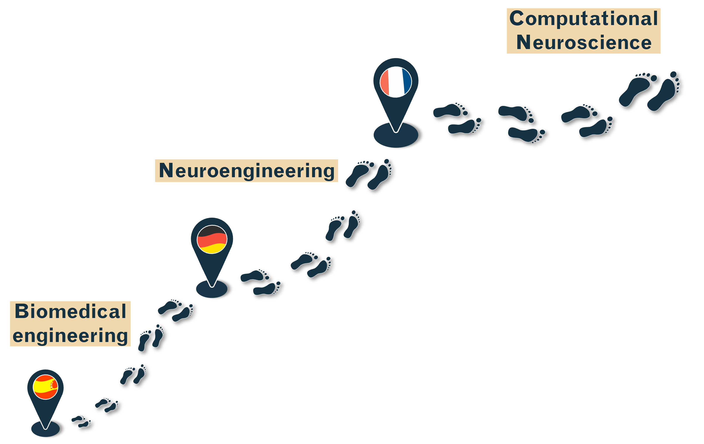

I am a computational neuroscientist and neuroengineer interested in how the brain generates internal representations that allow us to understand and interact with the external world.
Basically, I use computational approaches to uncover how patterns of brain activity represent information, evolve over time, and support what we perceive, decide, and do.
